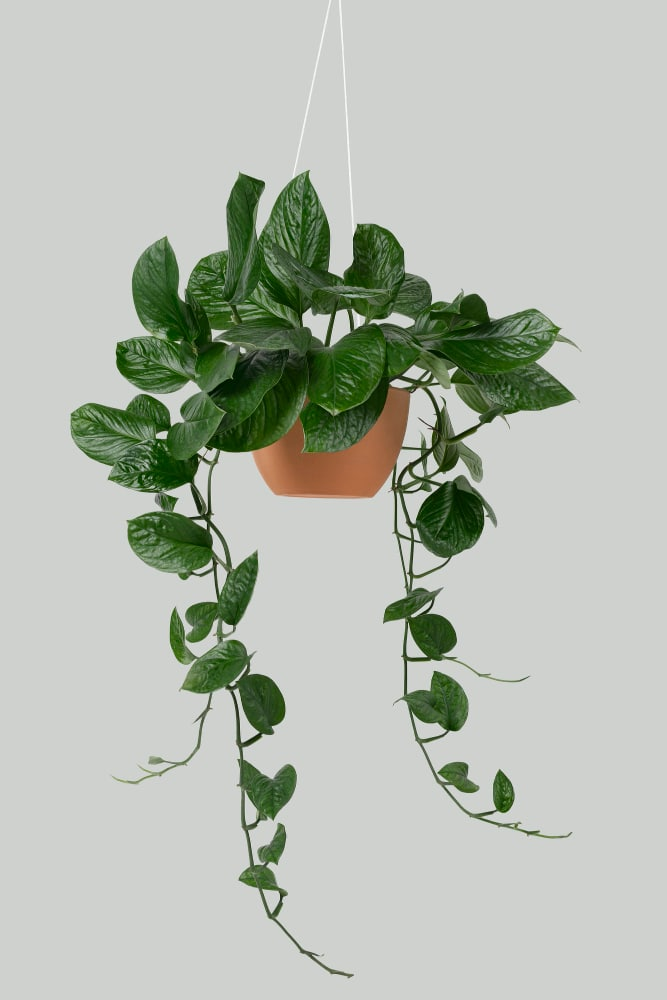

I don't need less plants. I need more shelves.
House plants do more than just beautify your living space; they also improve air quality and contribute to your well-being. By absorbing carbon dioxide and releasing oxygen, plants help purify indoor air and reduce the presence of toxins like formaldehyde and benzene. This natural air filtration process makes your environment healthier and more refreshing. Additionally, plants can lower stress levels and enhance relaxation, with studies showing that their presence can reduce anxiety and improve mood.
Beyond their health benefits, house plants add vibrant color and texture to your home, creating a more inviting and aesthetically pleasing atmosphere. Whether you choose a lush fern for the living room or a compact succulent for your desk, plants offer a simple way to personalize and elevate your decor. With minimal care, these green companions can transform your space into a healthier, more serene environment.
Anthurium
Anthurium, commonly known as Flamingo Flower, Tail Flower, or Painted Tongue Plant, is a fascinating houseplant with heart-shaped "flowers" that are, in fact, colorful waxy leaves called spathes. If you're new to caring for Anthurium, this beginner's guide will help you keep these beautiful plants thriving.
Care Tips| Ranking | Name | Image |
|---|---|---|
| 1 | Pothos |  |
| 2 | Cactus |  |
| 3 | Spider Plant |  |
Alocasia
Alocasia, or elephant's ear, are popular indoor plants with large heart-shaped or arrow-shaped leaves that grow from tuberous rhizomes. Several species in the genus are prized for their prominent veins or variegation.
Care Tips